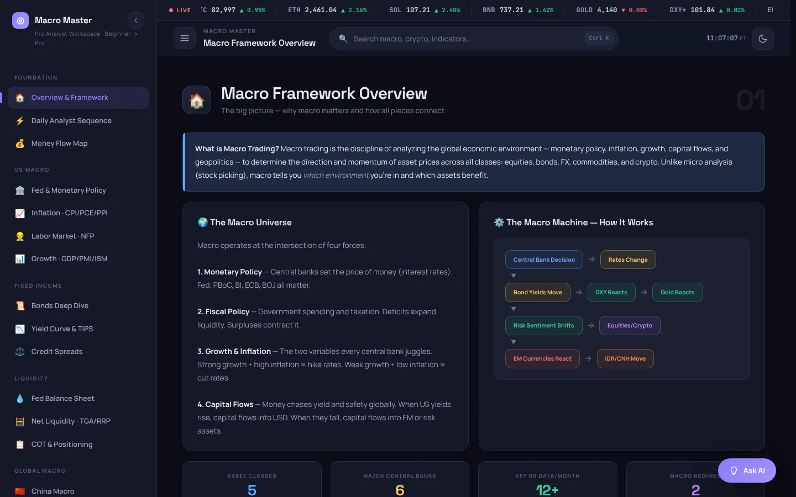
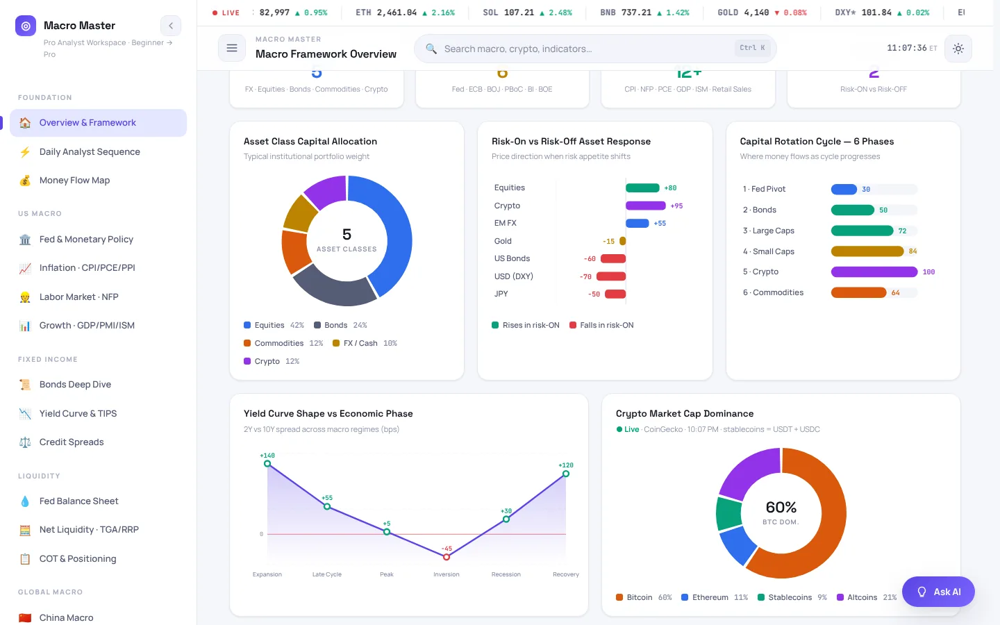
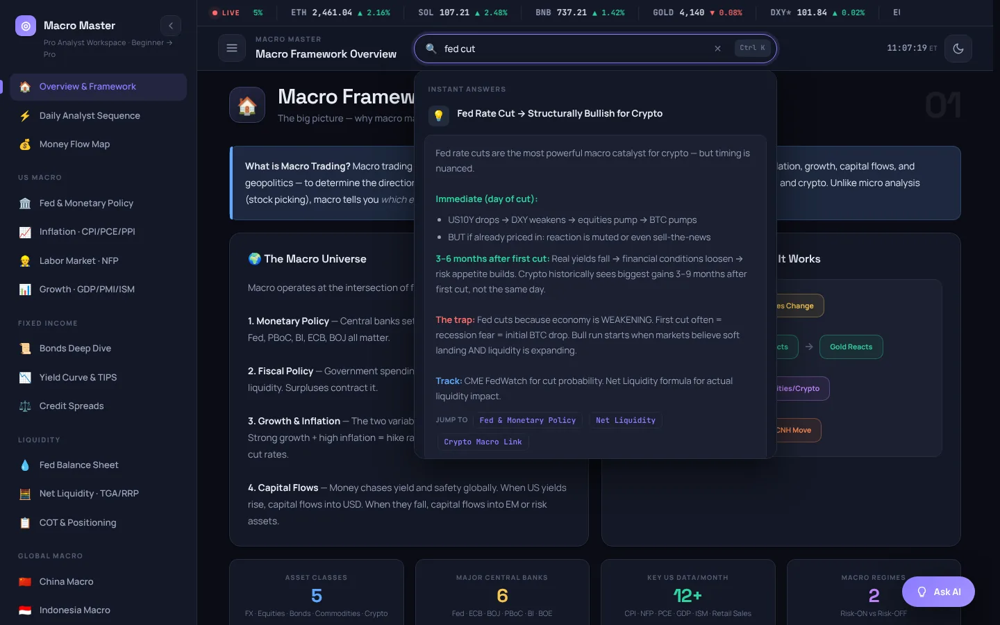
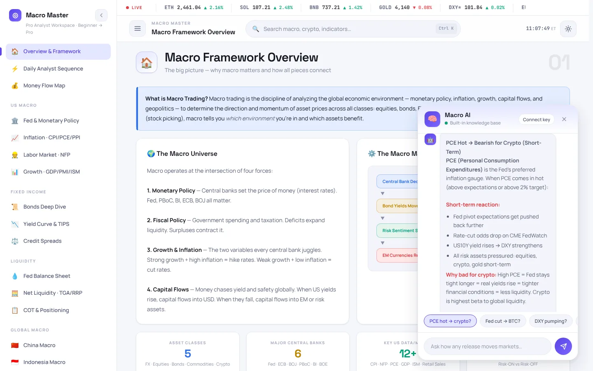
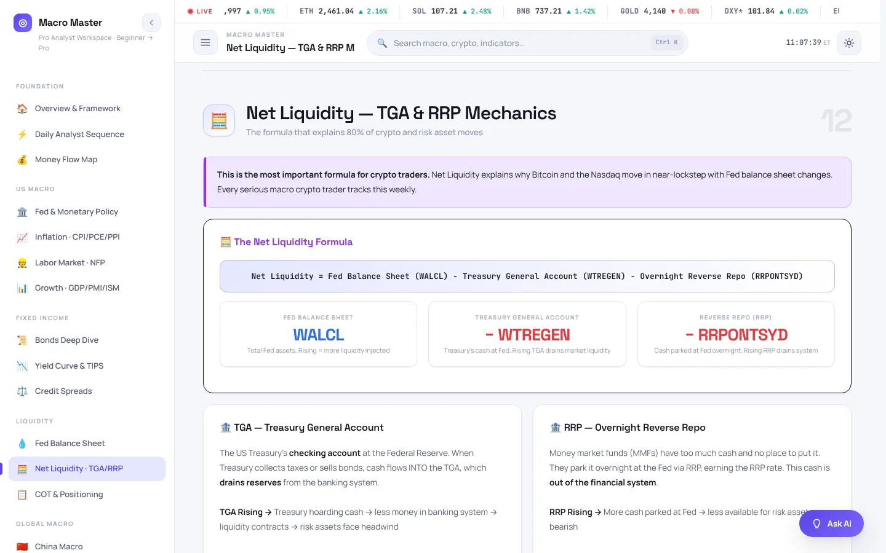
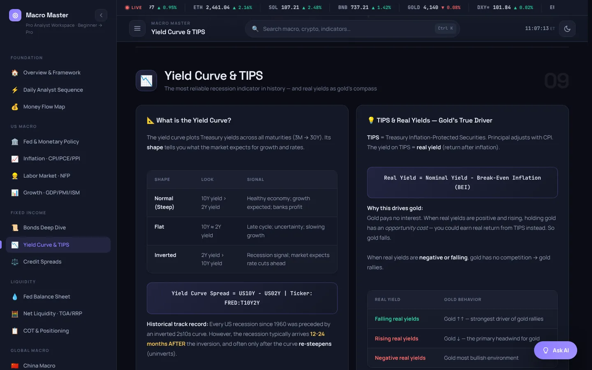
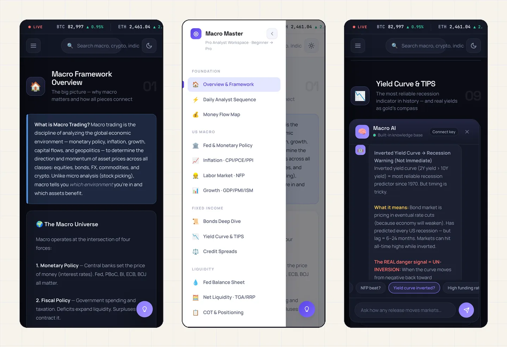

Project 04 · Learning tool · Macro · Built with AI
Macro Master
A learning workspace for macroeconomics. It shows how Fed policy, inflation, liquidity, bonds and crypto connect, the way an analyst reads them, and every lesson comes with the tickers to watch.
A learning workspace for macroeconomics. It explains how the Fed, inflation, jobs, liquidity, bonds and crypto connect, and tells you which numbers to watch for each one.
Macro is usually taught in separate pieces, and the links between them get lost.
24 lessons in 7 groups, a search box, charts, a live market tape and an AI tutor that answers questions.
Live demo that runs in any browser, with nothing to install.
The six month markets course taught me the pieces of macro one by one: interest rates, inflation, jobs, liquidity, bonds. What I wanted next was one place that shows how they connect, in the order an analyst actually reads them, and that I could use to explain macro to people who don't trade.
Macro Master is that place. The habit behind it, connecting the data to a clear story, is the same one I use in my research work today.
Don't just read about it. Try it.
A limited version of the app runs right here, inside this page, on dummy data. Click to start.

Open the Release Lab: pick CPI, PCE, payrolls or the Fed, flip the surprise and watch the chain react.
Take the 10 question Quiz. Every answer explains why and links back to its lesson.
Press Ctrl K (or Cmd K) and search "cpi hot", or ask the tutor "why do rate cuts help crypto?"
The parts that matter.
Lessons start from the formula
Each section explains one mechanism and lists the TradingView or FRED tickers to watch, so a lesson turns into a daily check.
A tutor with guard rails
Offline it answers from 19 written entries. With a visitor's own Groq key it adds live CoinGecko, BLS, World Bank and Fear and Greed data before answering.
Light and fast
Charts drawn in code, light and dark themes, full keyboard support, and it works on a 390 px phone screen.
A closer look.






All screens show demo mode with fictional data. Drag, scroll or use the arrows. Click a screen to enlarge.
Designed and directed by me. Code written with AI.
I don't have a coding background. I learned to build by directing AI: I decide what the tool must do, write the specs and the rules, review every change and test it until it works. Claude and other AI tools write the code.
- Specs and rules written before any code
- Every change checked in the browser before it stays
- Secrets, personal data and real accounts removed before publishing
Clean code, no keys inside.
The repository has the code, a README and notes on how it is built. It contains no API keys, accounts or personal data, and it starts in demo mode with dummy data.